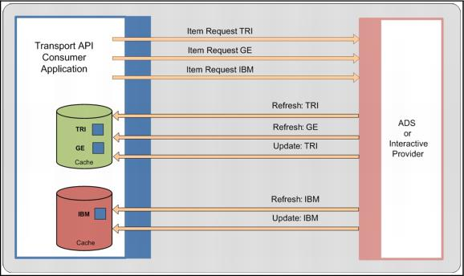

Concepts The Value Added Payload Cache component provides a facility for storing OMM containers (the data payload of OMM messages). Typical use of a payload cache is to store the current image of OMM data streams, where each entry in the cache corresponds to a single data stream. The initial content of a cache entry is defined by the payload of a refresh message. The current (or last) value of the entry is defined by the cumulative application of all refresh and update messages applied to the cache entry container. Values are stored in and retrieved from the cache as encoded OMM containers. A cache is defined as a collection of OMM data containers. An application may create multiple cache collections, or instances, depending on how it wants to organize the data. The only restriction on cache organization is that all entries in a cache must use the same RDM Field Dictionary to define the set of field definitions it will use. At minimum, a separate cache would be required for each field dictionary in use by the application. However, since cache instances can also share the same field dictionary, partitioning is not restricted to dictionary usage. Some examples of how cache instances can be organized in an application include: all item streams on an RSSL connection; all items belonging to a particular service; all items across the entire application. The application is responsible for organizing cache instances, managing the lifecycle of all entries in each cache, and applying and retrieving data from the cache. Figure 1 shows an example consumer type application which has created two cache instances to store data from two services on an OMM provider.  Figure 8. Consumer Application using Cache to Store Payload Data for Item Streams